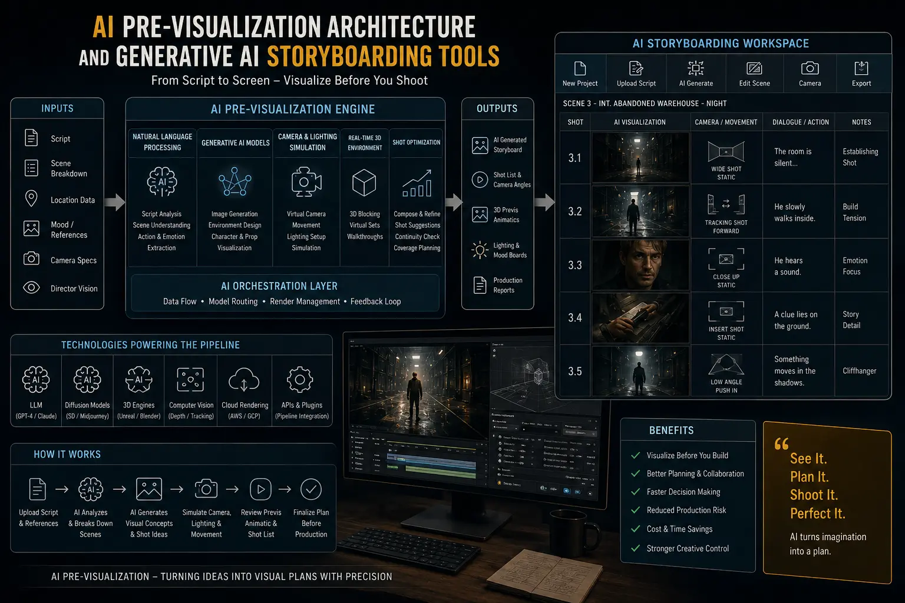
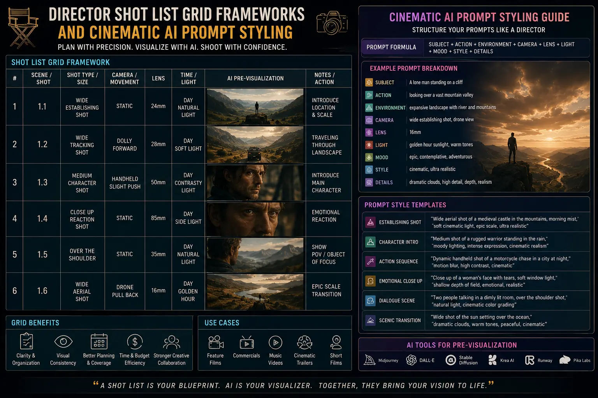

Using Generative AI to Pre-Visualize Directorial Shot Lists Before Hitting the Set
The Pre-Production Bottleneck in Modern Commercials
In high-end commercial video production, pre-production is the most critical phase. Before the cameras roll, the director, clients, and crew must share a clear vision of the aesthetic. Traditionally, this required drawing hand-drawn storyboards or compiling generic reference photos from the web. This process was time-consuming and often failed to convey exact framings, lighting styles, or camera movements, leading to misunderstandings on set.
Generative AI tools solve this issue. By utilizing an **AI Pre-Visualization Architecture**, directors can produce highly detailed shot mockups in minutes. This technology acts as a bridge between scripting and filming, allowing teams to optimize their **Video Shoot Pre-Production** workflow and align on every detail.
By integrating **Generative AI Storyboarding Tools**, creative directors can build precise visual references. These boards help camera and lighting crews plan setups in advance, establishing a solid workflow that keeps productions running on time.
How Generative Pre-Visualization Works
Building a data-driven pre-production pipeline involves translating script concepts into structured visual guides:
- Creating Shot List Grids. The team maps out the script into structured **Director shot list grid frameworks**, detailing camera angles, movements, and lighting.
- Cinematic Image Generation. Using advanced tools, editors input **cinematic AI prompt styling** parameters (such as focal length, camera type, and lighting styles) to generate matched storyboard frames.
- Shot Mapping. The generated frames help in **mapping out commercial ad frames**, allowing clients to review the visual narrative flow before booking studio time.
- Automated Script Matching. Advanced AI tools parse scripts to generate visual boards, supporting a fast and efficient **studio workflow automation** setup.
Aligned Visual Direction
Using **Generative AI Storyboarding Tools** ensures that clients, directors, and crew members are aligned on the visual style before shooting begins.
Zero Setup Delays
Providing detailed storyboards to the lighting and camera teams helps in **minimizing video shoot delays** by reducing setup guesswork on-set.
Cohesive Campaign Planning
Integrating AI-driven mockups into **creative media campaign planning** allows marketing teams to visualize the final assets early in the planning phase.
Efficient Studio Workflow
Applying **studio workflow automation** protocols streamlines data transfers and file preparation, maximizing production efficiency.

The Prompt Styling Playbook for Film Storyboarding
Generating accurate storyboards requires specific prompt styling that mimics professional film parameters. Generic prompts yield illustration-style results, while technical prompts generate photographic continuity:
- Focal Length Specifications. Prompts include camera lens details, such as 'shot on 35mm anamorphic lens' or '85mm close-up portrait' to establish realistic perspective.
- Lighting Profiles. Terms like 'chiaroscuro lighting', 'high-key corporate lighting', or 'golden hour backlit' guide the AI to match the scene's mood.
- Compositional Rules. Incorporating framing styles, such as 'rule of thirds composition', 'low-angle tracking shot', or 'wide establishing frame' keeps layout quality high.
Generative Software
- Midjourney v6 for realistic cinematic frames.
- Stable Diffusion XL for custom character models.
- DALL-E 3 for rapid concept generation.
- Runway Gen-2 for test motion loops.
Pre-Production Steps
- Convert script segments into scene prompts.
- Generate visual variations for client review.
- Compile selected mockups into shot list grids.
- Distribute storyboard printouts to the technical crew.
Production Deliverables
- Multi-page cinematic storyboards.
- Camera movement reference charts.
- Lighting placement floorplans.
- Client-approved visual campaign templates.

Conclusion
Generative AI has changed how commercial shoots are planned. By incorporating **AI Pre-Visualization Architecture** and **Generative AI Storyboarding Tools**, production teams can plan and execute visual projects faster and with greater accuracy. This detailed approach optimizes **Video Shoot Pre-Production**, reducing misunderstandings and helping crews execute complex concepts without delay.
At **The PhD Ads**, we utilize advanced pre-visualization workflows for all commercial campaigns. Our production team integrates **cinematic AI prompt styling** and **Director shot list grid frameworks** to plan visual sequences, helping clients organize their campaigns efficiently.
Key Topics
Optimize Your Pre-Production Flow
At The PhD Ads, we use AI-driven pre-visualization and structured shot grids to align visual style early, reducing delay risks and maximizing campaign quality.
Email: team@e2o.in